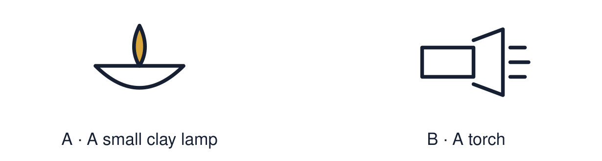

Arrival choices
You can begin without previous learning. Word help: festival means a special time when people celebrate.

Start with 1 and 2. Try 3 and 4 when ready. Reading and exact scribing are available.
1 What does festival mean?
Support: Use the reminder strip or talk it through with an adult.
2 Which meaning fits festival?
Support: Choose: A special time when people celebrate OR A festival of lights celebrated by many Hindus, Sikhs and Jains.
3 What can the light of a diya stand for?
Support: Use the model evidence anchor B or read one relevant card together.
4 Does every family celebrate Diwali in the same way?
Support: Give a reason when ready.
Stretch: use a precise example or explain which detail supports your answer.
Evidence cards
Read, point or listen. Keep the source label with any detail you use.
A Diwali
Diwali is a festival of lights. Many Hindus, Sikhs and Jains celebrate it in autumn. Families light lamps, share food and visit each other.
Source: Authored summary; see Hindu American Foundation, Diwali
Limit: Families celebrate in different ways. The stories told also differ.
B The diya
A diya is a small lamp. Rows of diyas are lit at Diwali. For many people the light stands for good overcoming evil and for hope.
Source: Authored summary; see Hindu American Foundation, Diwali
Limit: A symbol can mean different things to different people.
C Rangoli
Rangoli are bright patterns made on the floor near the door. Many families make them to welcome guests.
Source: Authored RE summary
Limit: Not every family makes rangoli.
D Light as a symbol
Light helps people see in the dark. Many festivals use light to stand for hope, goodness or welcome.
Source: Authored classroom resource
Limit: Light is used in many faiths. The meanings are not all the same.
Shared investigation
1. Match each Diwali symbol to a meaning.
2. Say which card gave you the evidence.
Work with a partner or adult, or use your own table. One person suggests; the other checks the evidence. Swap after one turn. Passing is allowed.
Move or match the cards
| Cards to use |
|---|
| Rows of lamps in the dark |
| A rangoli pattern by the door |
| A lit diya |
Possible labels: Good overcoming evil / Hope / Welcome
Support: Show two choices. Read one short instruction. Point, match or say a word, then add a reason when ready.
Further challenge: Explain why light is a useful symbol for hope.
Supported independent task
Complete this route only. Explore one festival of light and explain one meaning linked to it.
1. Choose one symbol: diya or rangoli.
2. Match it to a meaning card.
3. Draw or label the symbol and its meaning.
Support: Show two choices. Read one short instruction. Point, match or say a word, then add a reason when ready. Complete the organiser one space at a time. Light can mean ___ because ___.
An adult may read or scribe your exact response. They should not choose the answer.
Standard independent task
Complete this route only. Explore one festival of light and explain one meaning linked to it.
1. Choose one Diwali symbol.
2. Write or say what it means.
3. Finish the sentence: Light can mean ___.
Support: Light can mean ___ because ___.
Check the required evidence and revise one detail.
Stretch independent task
Complete this route only. Explore one festival of light and explain one meaning linked to it.
1. Choose two Diwali symbols and give a meaning for each.
2. Explain why light is used as a symbol.
3. Note one way families might celebrate differently.
Support: Choose the evidence independently. Use the frame only if it helps.
Explain why light is a useful symbol for hope.
Exit ticket
Choose a response mode. You may give your answers privately to an adult.
What can the light of a diya stand for?
Does every family celebrate Diwali in the same way?
Support: Light can mean ___ because ___.
Further challenge: Explain why light is a useful symbol for hope.